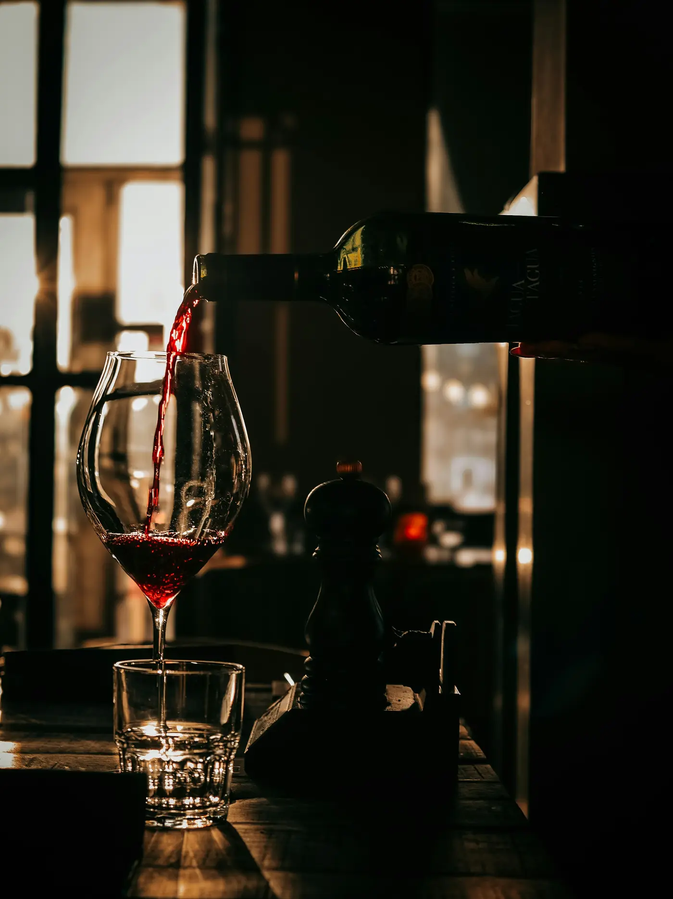
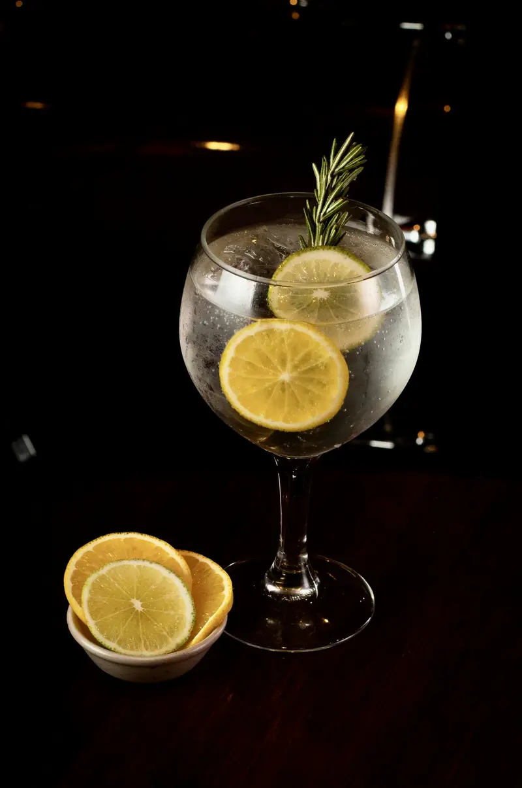
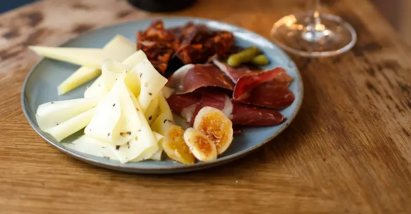
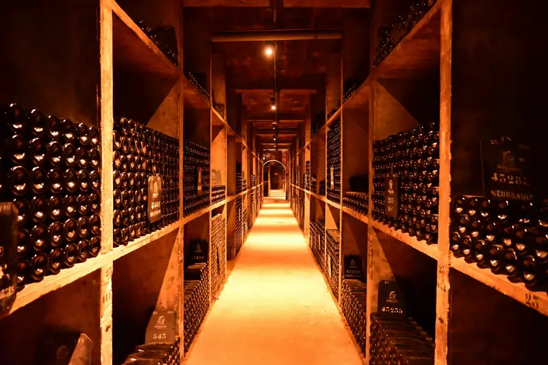
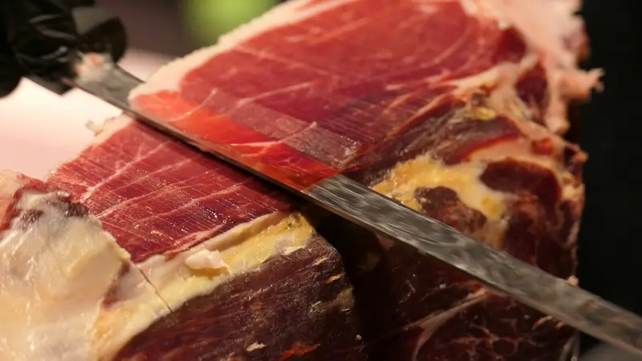
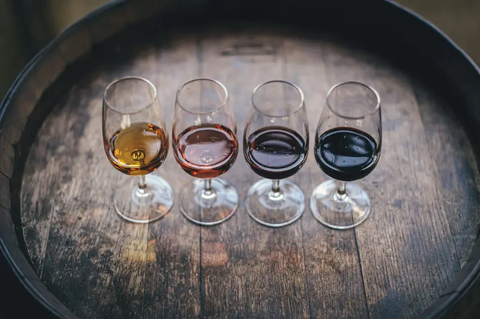
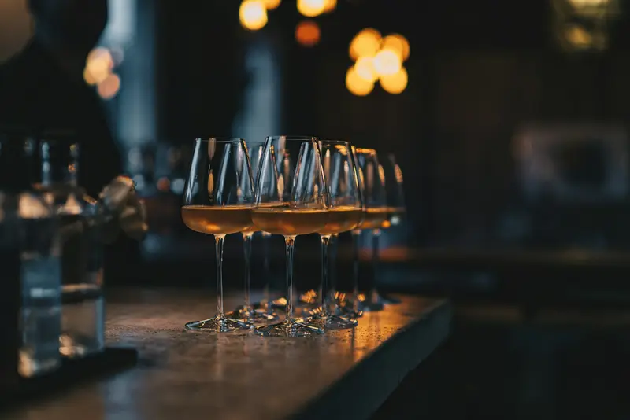

Vinoteca y gin bar · Boulevard de La CalaWine & gin bar · Boulevard de La Cala
Una copa bien servida, una tapa honesta y una pared de ginebras de todo el mundo, en el corazón de La Cala de Mijas.A well-poured glass, an honest tapa and a wall of gins from around the world, in the heart of La Cala de Mijas.
- 78 vinos por copawines by the glass
- 294 ginebrasgins
- 4,6 en Google · 652 reseñason Google · 652 reviews
Abierto todos los días de 11:00 a 02:00Open every day, 11:00 to 02:00
Del viñedo a la copaFrom vine to glass
01 · ViñedoVineyard
Todo empieza en la cepa.It all starts with the vine.
Cepa es la planta de la vid. De Rías Baixas a las Sierras de Málaga, cada copa de la carta nace en una viña distinta.Cepa is the vine itself. From Rías Baixas to the hills of Málaga, every glass on the list starts in a different vineyard.
02 · VendimiaHarvest
La vendimia.The harvest.
Albariño, Godello, Verdejo, Tempranillo, Palomino, Moscatel, Pedro Ximénez: más de 30 uvas distintas en la carta.Albariño, Godello, Verdejo, Tempranillo, Palomino, Moscatel, Pedro Ximénez: over 30 different grapes on the list.
03 · BarricaBarrel
El tiempo en madera.Time in oak.
Crianza en barrica o bajo velo de flor: del fino de Jerez al Rioja de guarda y el Pedro Ximénez de 1946.Aged in oak or under a veil of flor: from Jerez fino to age-worthy Rioja and a 1946 Pedro Ximénez.
04 · BotellaBottle
Reposo en botella.Resting in the bottle.
Más de 70 vinos por copa, y botellas para llevar a casa desde la bodega.Over 70 wines by the glass, and bottles to take home from the shop.
05 · CopaGlass
Y por fin, la copa.And finally, the glass.
Servida en el Boulevard de La Cala, con una tapa al lado.Poured on the Boulevard de La Cala, with a tapa on the side.
Abrir la cartaOpen the list
I · La cartaThe list
Elige una copa. Mira cómo se sirve.Pick a glass. Watch it pour.
La carta completa que hoy vive en un PDF, ahora filtrable desde el móvil. Toca cualquier vino o ginebra: la copa se llena con su color.The full list that today lives in a PDF, now filterable on your phone. Tap any wine or gin and the glass fills with its colour.
Precios por copa según la carta publicada (generosos, dulces, oporto y madeira: 75 ml; blancos, tintos, rosados y burbujas: 150 ml). Descorche: 5 € por botella. Los precios de botella están pendientes de confirmar.Prices per glass as on the published list (sherry, sweet wines, port and Madeira: 75 ml; whites, reds, rosés and sparkling: 150 ml). Corkage: €5 per bottle. Bottle prices to be confirmed.

Recomendados por Pura CepaPura Cepa's signature serves
Precio por gin & tonic según la carta publicada. Sin alcohol: Undone 0,0, Tanqueray 0,0 y Whitley Neill 0,0 (frambuesa, ruibarbo y jengibre).Price per gin & tonic as on the published list. Alcohol-free: Undone 0.0, Tanqueray 0.0 and Whitley Neill 0.0 (raspberry, rhubarb & ginger).
La pared de ginebrasThe gin wall
294 ginebras. Toca una, se enciende.294 gins. Tap one, it lights up.
Sigue bajando: la pared avanza. Toca una botella.Keep scrolling: the wall slides. Tap a bottle.
II · MaridajePairing
¿Qué vas a picar? La rueda te sirve la copa.What are you eating? The wheel pours the glass.
Elige una tapa de la carta y la rueda gira hasta el estilo de vino que mejor la acompaña, con tres botellas de la casa.Choose a tapa from the menu and the wheel turns to the wine style that suits it best, with three bottles from the house list.
Sugerencias orientativas de esta demo. En barra, el equipo te recomienda según lo que tenga abierto.Indicative suggestions written for this demo. At the bar, the team will recommend from what is open.


III · La bodegaThe cellar
Saca una botella del estante. Recógela al pasar.Pull a bottle off the shelf. Pick it up on your way.
Los estantes van de norte a sur: de Galicia a Mijas, y luego el mundo. Toca una botella para sacarla, añádela a tu pedido y pásate a recogerla.The shelves run north to south, from Galicia to Mijas, then the world. Tap a bottle to pull it out, add it to your order and collect it at the bar.
Desliza los estantes · 78 botellasSwipe the shelves · 78 bottles
Botella para llevar:Bottle to take away: [precio]
Tu pedido para recogerYour click-and-collect order
Aún no has sacado ninguna botella del estante.You haven't pulled any bottles off the shelf yet.
IV · Tapas y racionesTapas & portions
Para acompañar la copa.To go with your glass.

Ocultar platos con:Hide dishes containing:
Quesos internacionalesInternational cheeses6,90 € por queso · media tabla (3) 15,95 € · tabla (6) 25,95 €€6.90 per cheese · half board (3) €15.95 · board (6) €25.95
| QuesoCheese | PaísCountry | LecheMilk | MaduraciónAgeing |
|---|
Alérgenos según la carta publicada. Si tienes una alergia, avisa siempre al personal antes de pedir.Allergens as shown on the published menu. If you have an allergy, always tell the staff before ordering.
V · Cata de vinos andalucesAndalusian wine tasting
Cuatro copas, una hora, toda Andalucía.Four glasses, one hour, all of Andalusia.
Crianza biológicaBiological ageing
- AlmendraAlmond
- LevaduraYeast
- SalinoSaline
BlancoWhite
- CítricosCitrus
- Flor blancaWhite flowers
- ManzanaApple
TintoRed
- Frutos rojosRed fruit
- EspeciasSpice
- RegalizLiquorice
DulceSweet
- PasaRaisin
- HigoFig
- MielHoney
Notas de aroma orientativas para cada estilo; los vinos de la cata cambian.Indicative aroma notes for each style; the tasting wines change.
- Todos los días a las 13:00 · 1 hora · solo con reservaEvery day at 13:00 · 1 hour · booking only
- Guiada por un profesional, con mantel de cata y diploma de catadorLed by a professional, with tasting mat and taster's diploma
- Con queso andaluz, patatas, regañás y aguaWith Andalusian cheese, crisps, regañás and water
- 10 % de descuento en vinos para llevar10% off wines to take away
29 € por persona, IVA incluidoper person, VAT included

VI · AgendaEvents
Lo que pasa en la barra.What's on at the bar.
La cata de las 13:00 es diaria. El resto de eventos son ejemplos de cómo el bar publicaría su agenda.The 13:00 tasting runs daily. The other events are examples of how the bar would publish its calendar.
Cata diaria (real)Daily tasting (real) Evento de ejemploExample event

VII · ReservarBook
Guárdanos una mesa.Save us a table.
Rellena tres datos y se abre WhatsApp con la reserva escrita. Si lo prefieres, llama al 952 49 45 60.Fill in three details and WhatsApp opens with the booking typed out. Or call +34 952 49 45 60.
VIII · VisítanosVisit us
Blvd. de la Cala, 49
29649 La Cala de Mijas, Málaga
- Lunes a domingoMonday to Sunday
- 11:00 – 02:00
Pura Cepa Wine & Gin también está en Frigiliana y Ronda.Pura Cepa Wine & Gin is also in Frigiliana and Ronda.